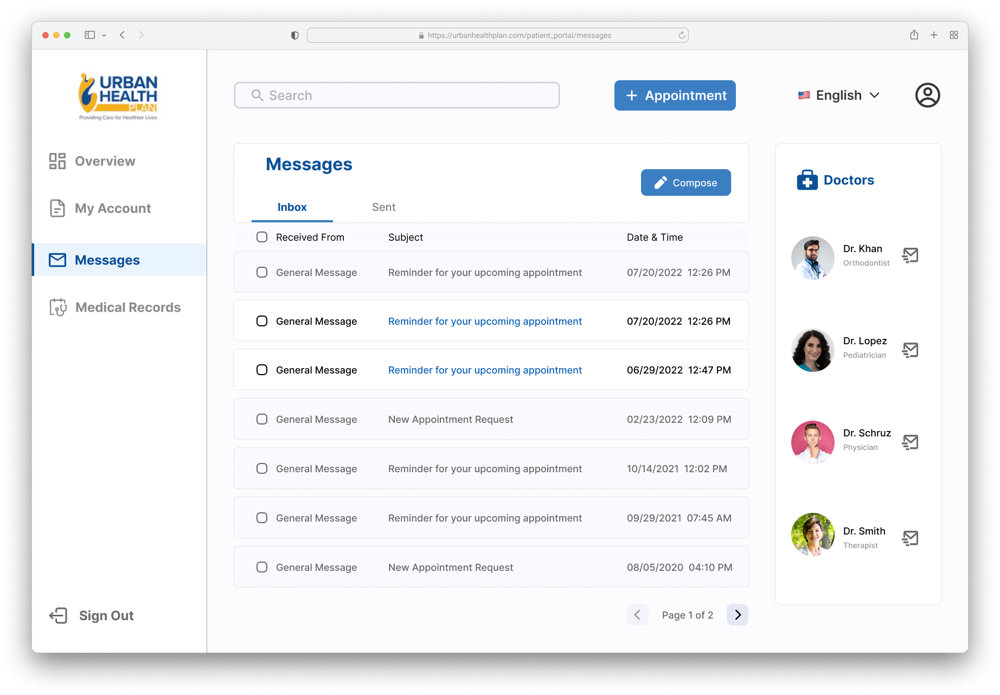
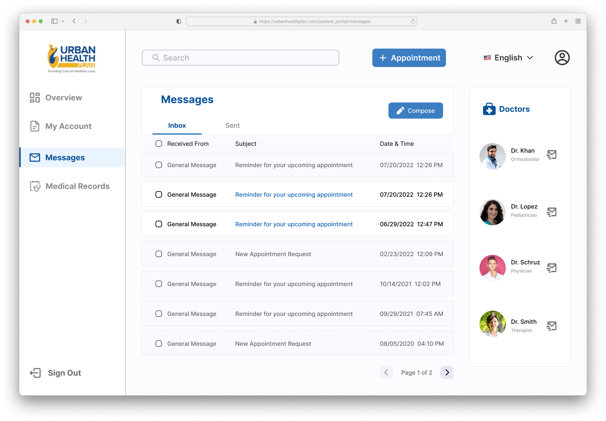
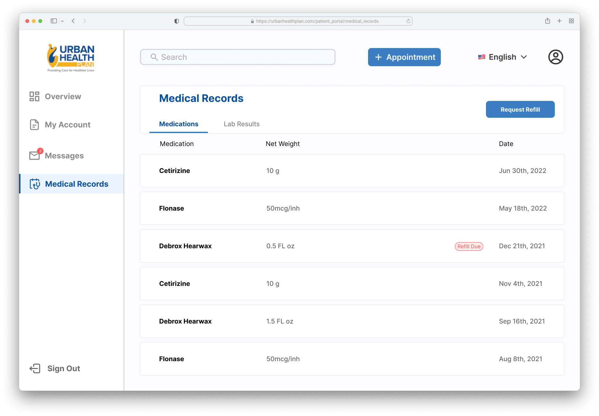
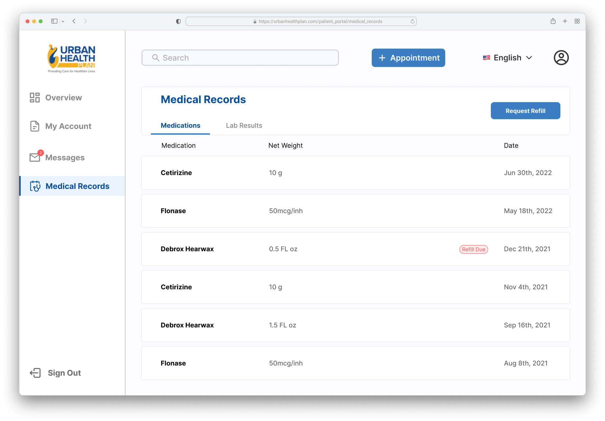
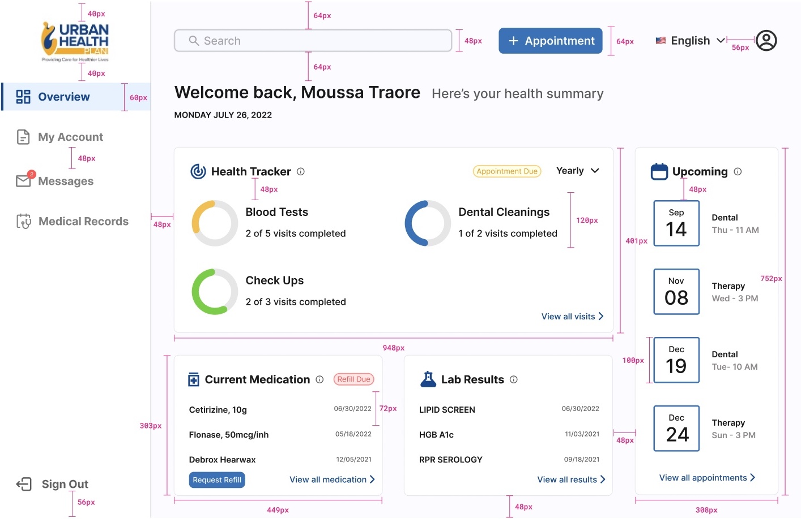

URBAN HEALTH PLAN
My Role
UI/UX Designer
Interaction Designer
Duration
3 months
Tools
Figma
Adobe Illustrator
Urban Health Plan is a system of community health centers in New York City. The goal of this project was to revamp their patient web portal and increase user satisfaction. I worked with 2 Stakeholders and 2 Software Developers on this project.
The Problem
- Outdated and clunky interface.
- Inconsistent design choices.
- Bad information architecture and hierarchy.
- Missing important features.
The Solution
I embarked on a full redesign of Urban Health Plan's patient web portal. The new design will prioritize a clean and intuitive layout, with easy access to frequently used features and a clear separation of information.
Old Web Portal


Design Process

Interviews
I conducted interviews with 2 skateholders and 4 patients. The interview questions focused on understanding current usage patterns, and pain points the user encounters while using the web portal. The qualitative data gathered helped us to get an idea of what our users were looking for and to gather as much information from them as possible before moving forward.
User Stories
After analyzing the gathered data, the stakeholders and I have decided on 6 key tasks. It became evident that our objective was not only to design a user-friendly portal but also to create 2 new features: scheduling new appointment and tracking progress for doctor visits.
1. As a user, I want to be able to see my upcoming appointments as soon as I log in.
2. As a user, I want to be able to track my progress in keeping up with my doctor visits.
3. As a user, I want to be able to schedule a new appointment.
4. As a user, I want to be able to message my doctors.
5. As a user, I want to be able to view and access my medical records.
6. As a user, I want to be able to view and edit my personal information.
Dashboard Review
I presented 2 versions of the dashboard to the stakeholders. Since the health tracker feature was a new addition to the dashboard, it was necessary to explore at least two designs and explain the pros and cons of both versions.

User Flows
Schedule new appointment Low Fidelity User Flow

Information Architecture
Color Palette

Typeface

Component Library
After collaborating with developers to understand the constraints and limitations during implementation, I created a component library in Figma. This will ensure consistency in the design.

Usability Test

After conducting the initial usability test, some of the participants were confused by the appointments card on the dashboard and clicked on it when attempting to schedule a new appointment. As a result, I made the decision to change the label from 'appointments' to 'upcoming'.
High Fidelity Desktop Screens


 

 


High Fidelity Mobile Screens

Handoff to Developers
To guarantee a seamless transfer to developers, I incorporated precise measurements into the design files. I labeled and described every aspect of the design, including button placement and element spacing, to ensure clarity.
Impact & Takeaways
Urban Health Plan had more than 80,000 patients with more than 400,000 visits in 2020. This redesign has the potential to improve tens of thousands of patient engagement and communication with healthcare providers, leading to improved health outcomes and patient satisfaction.
Also a prototype was shared with the client and approved after a series of testing with real users.